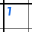
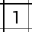
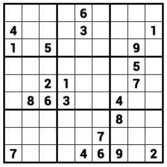

Solving Sudoku
- Learn the rules of the game below.
- Enter a number by touching the square, then sliding toward where
that number would appear on a clock face. For example, 3 is to the right
— 3 o'clock.
- Repeat the previous number in a blank square by tapping the square.
 Undo a mistake by tapping the Undo command. Or simply enter
the correct number.
Undo a mistake by tapping the Undo command. Or simply enter
the correct number.
- Erase a number by touching the square, then sliding toward 12 o'clock.
- If you see this  instead of this
 when you enter a 1, you have
started a trail (see below). To turn the trail display off, uncheck the
trail's checkbox in the list below the grid.
 Start over using the Undo to Start command. Tip: tap the
Redo command repeatedly after starting over until you find the
mistake.
Start over using the Undo to Start command. Tip: tap the
Redo command repeatedly after starting over until you find the
mistake.
- If you get stuck, try creating trails (see
below). Or use the Give Up command from the menu, then
review your attempt to see what you missed.
Trails
 A trail is a series of moves that follow from an initial guess.
The New Trail command starts one.
A trail is a series of moves that follow from an initial guess.
The New Trail command starts one.
- A trail's moves are shown in a
color and in one corner of their squares.
- The purpose of a trail is to disprove that initial guess. A
productive trail follows the consequences of the first move all the way to a
contradiction: a situation that breaks the rules of the game.
- When you have disproved a guess, turn off the trail and make any moves
that follow, given the new information.
- To turn off a trail entirely, uncheck its checkbox in the list
below the solution grid.
- To just turn off the trail's entry but leave the trail showing,
toggle the on/off button to the right of the trail list.
- You may show up to 4 trails simultaneously.
- To make an old trail active, touch its row in the list somewhere
other than its checkbox.
- To gray out a trail in the list, long-press its row.
The Rules of Sudoku
- Fill in the blank squares with numbers from 1 through 9.
- A solved Sudoku has all 9 numbers in every row, column, and 3-by-3
block of the board.
- A good place to start is to look for a block where some number can only be
in one of its squares. Put the number in that square, then look for the
next forced move.

For example, examine this puzzle. In block 2 (top center), the number 1 can
only be in its top right square. In block 5 (center), 6 must be in the top
left square. In block 8 (bottom center), 3 must be in the top right square.
- A row or column may likewise have just one possible open spot for a given
number. These are typically harder to see than block moves. An example
from the above puzzle is the number 7 in row 6: its only possible location
is the center square.
- There are several other ways to see that some number must go in some
square. The Review screen shows several of these
— the only catch is, you have to either solve the puzzle first or give
up.